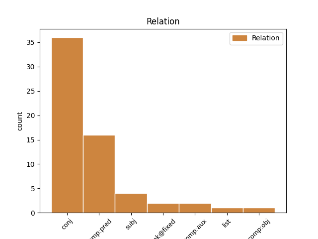
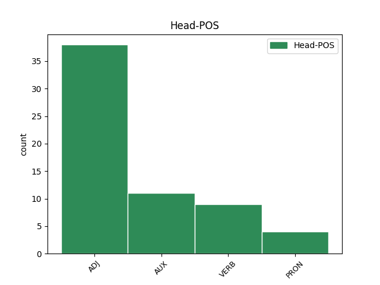
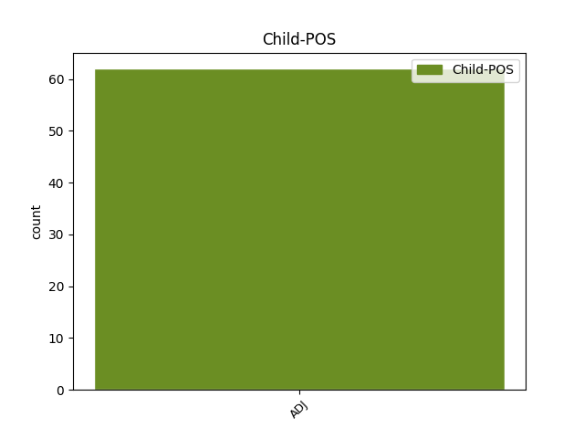

Distribution of features within this leaf



Agreement Rules sorted by frequency.
- When the dependent token is the conjunct(conj) of the head token, and the head token is ADJ and the dependent token is ADJ.
1 Ведь _ _ _ _ 0 _ _ _
2 Цыганов _ _ _ _ 0 _ _ _
3 мне _ _ _ _ 0 _ _ _
4 так _ _ _ _ 0 _ _ _
5 нравится _ _ _ _ 0 _ _ _
6 , _ _ _ _ 0 _ _ _
7 он _ _ _ _ 0 _ _ _
8 мрачный мрачный ADJ _ Case=Nom|Degree=Pos|Gender=Masc|Number=Sing 0 _ _ _
9 , _ _ _ _ 0 _ _ _
10 гипермногодетный гипермногодетный ADJ _ Case=Nom|Degree=Pos|Gender=Masc|Number=Sing 8 conj _ SpaceAfter=No
11 , _ _ _ _ 0 _ _ _
12 и _ _ _ _ 0 _ _ _
13 то _ _ _ _ 0 _ _ _
14 ли _ _ _ _ 0 _ _ _
15 подлец _ _ _ _ 0 _ _ _
16 , _ _ _ _ 0 _ _ _
17 то _ _ _ _ 0 _ _ _
18 ли _ _ _ _ 0 _ _ _
19 просто _ _ _ _ 0 _ _ _
20 бабник _ _ _ _ 0 _ _ _
21 . _ _ _ _ 0 _ _ _
1 Но _ _ _ _ 0 _ _ _
2 и _ _ _ _ 0 _ _ _
3 в _ _ _ _ 0 _ _ _
4 городе _ _ _ _ 0 _ _ _
5 было быть AUX _ Aspect=Imp|Gender=Neut|Mood=Ind|Number=Sing|Tense=Past|VerbForm=Fin|Voice=Act 0 _ _ _
6 хорошо хороший ADJ _ Degree=Pos|Gender=Neut|Number=Sing|Variant=Short 5 comp:pred _ SpaceAfter=No
7 . _ _ _ _ 0 _ _ _
1 Но _ _ _ _ 0 _ _ _
2 томным _ _ _ _ 0 _ _ _
3 вечером _ _ _ _ 0 _ _ _
4 я _ _ _ _ 0 _ _ _
5 наконец _ _ _ _ 0 _ _ _
6 вступил _ _ _ _ 0 _ _ _
7 Во _ _ _ _ 0 _ _ _
8 град _ _ _ _ 0 _ _ _
9 представший _ _ _ _ 0 _ _ _
10 мне _ _ _ _ 0 _ _ _
11 при _ _ _ _ 0 _ _ _
12 звоне _ _ _ _ 0 _ _ _
13 колокольном _ _ _ _ 0 _ _ _
14 И _ _ _ _ 0 _ _ _
15 жало _ _ _ _ 0 _ _ _
16 похоти _ _ _ _ 0 _ _ _
17 вдруг _ _ _ _ 0 _ _ _
18 сделалось сделаться VERB VERB Aspect=Perf|Gender=Neut|Mood=Ind|Number=Sing|Tense=Past|VerbForm=Fin|Voice=Mid 0 _ _ _
19 безбольным безбольный ADJ ADJ Case=Ins|Degree=Pos|Gender=Neut|Number=Sing 18 comp:pred _ _
1 Соединить _ _ _ _ 0 _ _ _
2 нерушимой _ _ _ _ 0 _ _ _
3 связью _ _ _ _ 0 _ _ _
4 религию _ _ _ _ 0 _ _ _
5 , _ _ _ _ 0 _ _ _
6 политику _ _ _ _ 0 _ _ _
7 и _ _ _ _ 0 _ _ _
8 поставить _ _ _ _ 0 _ _ _
9 на _ _ _ _ 0 _ _ _
10 страже _ _ _ _ 0 _ _ _
11 прав _ _ _ _ 0 _ _ _
12 детей _ _ _ _ 0 _ _ _
13 не _ _ _ _ 0 _ _ _
14 юриста _ _ _ _ 0 _ _ _
15 , _ _ _ _ 0 _ _ _
16 не _ _ _ _ 0 _ _ _
17 человека _ _ _ _ 0 _ _ _
18 с _ _ _ _ 0 _ _ _
19 большим _ _ _ _ 0 _ _ _
20 опытом _ _ _ _ 0 _ _ _
21 решения _ _ _ _ 0 _ _ _
22 самых _ _ _ _ 0 _ _ _
23 разных _ _ _ _ 0 _ _ _
24 детских _ _ _ _ 0 _ _ _
25 проблем _ _ _ _ 0 _ _ _
26 , _ _ _ _ 0 _ _ _
27 а _ _ _ _ 0 _ _ _
28 человека _ _ _ _ 0 _ _ _
29 воцерковленного _ _ _ _ 0 _ _ _
30 , _ _ _ _ 0 _ _ _
31 жертвующего _ _ _ _ 0 _ _ _
32 своими _ _ _ _ 0 _ _ _
33 детьми _ _ _ _ 0 _ _ _
34 во _ _ _ _ 0 _ _ _
35 имя _ _ _ _ 0 _ _ _
36 детей _ _ _ _ 0 _ _ _
37 России _ _ _ _ 0 _ _ _
38 , _ _ _ _ 0 _ _ _
39 который _ _ _ _ 0 _ _ _
40 несомненно _ _ _ _ 0 _ _ _
41 , _ _ _ _ 0 _ _ _
42 не _ _ _ _ 0 _ _ _
43 отступит _ _ _ _ 0 _ _ _
44 от _ _ _ _ 0 _ _ _
45 своих _ _ _ _ 0 _ _ _
46 православных _ _ _ _ 0 _ _ _
47 принципов _ _ _ _ 0 _ _ _
48 даже _ _ _ _ 0 _ _ _
49 в _ _ _ _ 0 _ _ _
50 самых _ _ _ _ 0 _ _ _
51 сложных _ _ _ _ 0 _ _ _
52 вопросах _ _ _ _ 0 _ _ _
53 , _ _ _ _ 0 _ _ _
54 это это PRON _ Animacy=Inan|Case=Nom|Gender=Neut|Number=Sing 0 _ _ _
55 конечно _ _ _ _ 0 _ _ _
56 , _ _ _ _ 0 _ _ _
57 потрясающе потрясающий ADJ _ Degree=Pos|Gender=Neut|Number=Sing|Variant=Short 54 comp:pred _ SpaceAfter=No
58 . _ _ _ _ 0 _ _ _
1 Крайнее крайний ADJ _ Case=Nom|Degree=Pos|Gender=Neut|Number=Sing 3 subj _ _
2 конечно _ _ _ _ 0 _ _ _
3 некрасиво некрасивый ADJ _ Degree=Pos|Gender=Neut|Number=Sing|Variant=Short 0 _ _ _
4 , _ _ _ _ 0 _ _ _
5 но _ _ _ _ 0 _ _ _
6 отношение _ _ _ _ 0 _ _ _
7 в _ _ _ _ 0 _ _ _
8 итоге _ _ _ _ 0 _ _ _
9 к _ _ _ _ 0 _ _ _
10 ЕР _ _ _ _ 0 _ _ _
11 покажет _ _ _ _ 0 _ _ _
12 . _ _ _ _ 0 _ _ _
1 я _ _ _ _ 0 _ _ _
2 сказал _ _ _ _ 0 _ _ _
3 я _ _ _ _ 0 _ _ _
4 вижу _ _ _ _ 0 _ _ _
5 сразу _ _ _ _ 0 _ _ _
6 всё все PRON NOUN Case=Nom|Gender=Neut|Number=Sing 0 _ _ _
7 равно равный ADJ ADJ Degree=Pos|Gender=Neut|Number=Sing|Variant=Short 6 unk@fixed _ _
8 придёт _ _ _ _ 0 _ _ _
9 конец _ _ _ _ 0 _ _ _
10 нам _ _ _ _ 0 _ _ _
11 несут _ _ _ _ 0 _ _ _
12 большую _ _ _ _ 0 _ _ _
13 вазу _ _ _ _ 0 _ _ _
14 там _ _ _ _ 0 _ _ _
15 цветок _ _ _ _ 0 _ _ _
16 и _ _ _ _ 0 _ _ _
17 бубенец _ _ _ _ 0 _ _ _
1 Спустя _ _ _ _ 0 _ _ _
2 минуту _ _ _ _ 0 _ _ _
3 улица _ _ _ _ 0 _ _ _
4 Верри _ _ _ _ 0 _ _ _
5 была быть AUX VERB Aspect=Imp|Gender=Fem|Mood=Ind|Number=Sing|Tense=Past|VerbForm=Fin|Voice=Act 0 _ _ _
6 безлюдна безлюдный ADJ ADJ Degree=Pos|Gender=Fem|Number=Sing|Variant=Short 5 comp:aux _ _
1 Потом _ _ _ _ 0 _ _ _
2 открыл открыть VERB _ Aspect=Perf|Gender=Masc|Mood=Ind|Number=Sing|Tense=Past|VerbForm=Fin|Voice=Act 0 _ _ _
3 другой другой ADJ _ Animacy=Inan|Case=Acc|Degree=Pos|Gender=Masc|Number=Sing 2 comp:obj _ SpaceAfter=No
4 , _ _ _ _ 0 _ _ _
5 подумал _ _ _ _ 0 _ _ _
6 : _ _ _ _ 0 _ _ _
7 " _ _ _ _ 0 _ _ _
8 Да _ _ _ _ 0 _ _ _
9 ну _ _ _ _ 0 _ _ _
10 нафиг _ _ _ _ 0 _ _ _
11 — _ _ _ _ 0 _ _ _
12 приснилось _ _ _ _ 0 _ _ _
13 что-то _ _ _ _ 0 _ _ _
14 " _ _ _ _ 0 _ _ _
15 — _ _ _ _ 0 _ _ _
16 и _ _ _ _ 0 _ _ _
17 снова _ _ _ _ 0 _ _ _
18 заснул _ _ _ _ 0 _ _ _
19 . _ _ _ _ 0 _ _ _
1 Ведь _ _ _ _ 0 _ _ _
2 они _ _ _ _ 0 _ _ _
3 до _ _ _ _ 0 _ _ _
4 Хачатура _ _ _ _ 0 _ _ _
5 Абовяна _ _ _ _ 0 _ _ _
6 не _ _ _ _ 0 _ _ _
7 имели _ _ _ _ 0 _ _ _
8 ни _ _ _ _ 0 _ _ _
9 одного _ _ _ _ 0 _ _ _
10 писателя _ _ _ _ 0 _ _ _
11 и _ _ _ _ 0 _ _ _
12 первый первый ADJ _ Case=Nom|Degree=Pos|Gender=Masc|Number=Sing 13 subj _ _
13 появился появиться VERB _ Aspect=Perf|Gender=Masc|Mood=Ind|Number=Sing|Tense=Past|VerbForm=Fin|Voice=Mid 0 _ _ _
14 в _ _ _ _ 0 _ _ _
15 19 _ _ _ _ 0 _ _ _
16 веке _ _ _ _ 0 _ _ _
17 столетия _ _ _ _ 0 _ _ _
18 лже _ _ _ _ 0 _ _ _
19 руководители _ _ _ _ 0 _ _ _
20 вбили _ _ _ _ 0 _ _ _
21 в _ _ _ _ 0 _ _ _
22 голову _ _ _ _ 0 _ _ _
23 народа _ _ _ _ 0 _ _ _
24 , _ _ _ _ 0 _ _ _
25 что _ _ _ _ 0 _ _ _
26 мы _ _ _ _ 0 _ _ _
27 самые _ _ _ _ 0 _ _ _
28 древние _ _ _ _ 0 _ _ _
29 и _ _ _ _ 0 _ _ _
30 умные _ _ _ _ 0 _ _ _
31 , _ _ _ _ 0 _ _ _
32 а _ _ _ _ 0 _ _ _
33 свои _ _ _ _ 0 _ _ _
34 границы _ _ _ _ 0 _ _ _
35 соэранять _ _ _ _ 0 _ _ _
36 русских _ _ _ _ 0 _ _ _
37 солдат _ _ _ _ 0 _ _ _
38 , _ _ _ _ 0 _ _ _
39 самим _ _ _ _ 0 _ _ _
40 убегая _ _ _ _ 0 _ _ _
41 подальше _ _ _ _ 0 _ _ _
42 от _ _ _ _ 0 _ _ _
43 армении _ _ _ _ 0 _ _ _
44 . _ _ _ _ 0 _ _ _
1 девочка _ _ _ _ 0 _ _ _
2 тоже _ _ _ _ 0 _ _ _
3 говорит _ _ _ _ 0 _ _ _
4 а _ _ _ _ 0 _ _ _
5 лен _ _ _ _ 0 _ _ _
6 -- _ _ _ _ 0 _ _ _
7 ты _ _ _ _ 0 _ _ _
8 дан дать VERB VERB Aspect=Perf|Gender=Masc|Number=Sing|Tense=Past|Variant=Short|VerbForm=Part|Voice=Pass 0 _ _ _
9 – _ _ _ _ 0 _ _ _
10 ты _ _ _ _ 0 _ _ _
11 бур бурый ADJ NOUN Animacy=Inan|Case=Acc|Degree=Pos|Gender=Masc|Number=Sing 8 conj _ _
12 забор _ _ _ _ 0 _ _ _
13 лови _ _ _ _ 0 _ _ _
14 хоро _ _ _ _ 0 _ _ _
15 -- _ _ _ _ 0 _ _ _
16 ший _ _ _ _ 0 _ _ _
17 пе _ _ _ _ 0 _ _ _
18 -- _ _ _ _ 0 _ _ _
19 реход _ _ _ _ 0 _ _ _
20 твоя _ _ _ _ 0 _ _ _
21 колода _ _ _ _ 0 _ _ _
22 пе _ _ _ _ 0 _ _ _
23 -- _ _ _ _ 0 _ _ _
24 региб _ _ _ _ 0 _ _ _
25 а _ _ _ _ 0 _ _ _
26 па _ _ _ _ 0 _ _ _
27 -- _ _ _ _ 0 _ _ _
28 рахода _ _ _ _ 0 _ _ _
29 са _ _ _ _ 0 _ _ _
30 -- _ _ _ _ 0 _ _ _
31 поги _ _ _ _ 0 _ _ _
1 девочка _ _ _ _ 0 _ _ _
2 тоже _ _ _ _ 0 _ _ _
3 говорит _ _ _ _ 0 _ _ _
4 а _ _ _ _ 0 _ _ _
5 лен _ _ _ _ 0 _ _ _
6 -- _ _ _ _ 0 _ _ _
7 ты _ _ _ _ 0 _ _ _
8 дан _ _ _ _ 0 _ _ _
9 – _ _ _ _ 0 _ _ _
10 ты _ _ _ _ 0 _ _ _
11 бур _ _ _ _ 0 _ _ _
12 забор _ _ _ _ 0 _ _ _
13 лови _ _ _ _ 0 _ _ _
14 хоро хороший ADJ NOUN Case=Nom|Degree=Pos|Gender=Masc|Number=Sing 0 _ _ _
15 -- _ _ _ _ 0 _ _ _
16 ший goeswith ADJ NOUN Case=Nom|Degree=Pos|Gender=Masc|Number=Sing 14 list _ _
17 пе _ _ _ _ 0 _ _ _
18 -- _ _ _ _ 0 _ _ _
19 реход _ _ _ _ 0 _ _ _
20 твоя _ _ _ _ 0 _ _ _
21 колода _ _ _ _ 0 _ _ _
22 пе _ _ _ _ 0 _ _ _
23 -- _ _ _ _ 0 _ _ _
24 региб _ _ _ _ 0 _ _ _
25 а _ _ _ _ 0 _ _ _
26 па _ _ _ _ 0 _ _ _
27 -- _ _ _ _ 0 _ _ _
28 рахода _ _ _ _ 0 _ _ _
29 са _ _ _ _ 0 _ _ _
30 -- _ _ _ _ 0 _ _ _
31 поги _ _ _ _ 0 _ _ _
Disagree Examples:
1 10 _ _ _ _ 0 _ _ _
2 . _ _ _ _ 0 _ _ _
3 Ах _ _ _ _ 0 _ _ _
4 , _ _ _ _ 0 _ _ _
5 да _ _ _ _ 0 _ _ _
6 ... _ _ _ _ 0 _ _ _
7 Есть _ _ _ _ 0 _ _ _
8 такой _ _ _ _ 0 _ _ _
9 экземпляр _ _ _ _ 0 _ _ _
10 , _ _ _ _ 0 _ _ _
11 как _ _ _ _ 0 _ _ _
12 чёткая _ _ _ _ 0 _ _ _
13 - _ _ _ _ 0 _ _ _
14 баба _ _ _ _ 0 _ _ _
15 , _ _ _ _ 0 _ _ _
16 сама _ _ _ _ 0 _ _ _
17 красивая красивый ADJ _ Case=Nom|Degree=Pos|Gender=Fem|Number=Sing 0 _ _ _
18 , _ _ _ _ 0 _ _ _
19 ребёнок _ _ _ _ 0 _ _ _
20 красивый красивый ADJ _ Case=Nom|Degree=Pos|Gender=Masc|Number=Sing 17 conj _ SpaceAfter=No
21 , _ _ _ _ 0 _ _ _
22 сидит _ _ _ _ 0 _ _ _
23 у _ _ _ _ 0 _ _ _
24 мамы _ _ _ _ 0 _ _ _
25 на _ _ _ _ 0 _ _ _
26 коленях _ _ _ _ 0 _ _ _
27 , _ _ _ _ 0 _ _ _
28 не _ _ _ _ 0 _ _ _
29 рыпается _ _ _ _ 0 _ _ _
30 , _ _ _ _ 0 _ _ _
31 она _ _ _ _ 0 _ _ _
32 ему _ _ _ _ 0 _ _ _
33 тихо _ _ _ _ 0 _ _ _
34 голову _ _ _ _ 0 _ _ _
35 гладит _ _ _ _ 0 _ _ _
36 , _ _ _ _ 0 _ _ _
37 вот _ _ _ _ 0 _ _ _
38 и _ _ _ _ 0 _ _ _
39 очередь _ _ _ _ 0 _ _ _
40 их _ _ _ _ 0 _ _ _
41 быстро _ _ _ _ 0 _ _ _
42 подошла _ _ _ _ 0 _ _ _
43 , _ _ _ _ 0 _ _ _
44 и _ _ _ _ 0 _ _ _
45 они _ _ _ _ 0 _ _ _
46 довольные _ _ _ _ 0 _ _ _
47 выходят _ _ _ _ 0 _ _ _
48 из _ _ _ _ 0 _ _ _
49 кабинета _ _ _ _ 0 _ _ _
50 , _ _ _ _ 0 _ _ _
51 и _ _ _ _ 0 _ _ _
52 она _ _ _ _ 0 _ _ _
53 такая _ _ _ _ 0 _ _ _
54 : _ _ _ _ 0 _ _ _
55 - _ _ _ _ 0 _ _ _
56 Роберт _ _ _ _ 0 _ _ _
57 , _ _ _ _ 0 _ _ _
58 а _ _ _ _ 0 _ _ _
59 пошли _ _ _ _ 0 _ _ _
60 в _ _ _ _ 0 _ _ _
61 парк _ _ _ _ 0 _ _ _
62 , _ _ _ _ 0 _ _ _
63 я _ _ _ _ 0 _ _ _
64 тебе _ _ _ _ 0 _ _ _
65 мороженку _ _ _ _ 0 _ _ _
66 куплю _ _ _ _ 0 _ _ _
67 . _ _ _ _ 0 _ _ _
1 Единственное единственный ADJ _ Case=Nom|Degree=Pos|Gender=Neut|Number=Sing 10 subj _ SpaceAfter=No
2 , _ _ _ _ 0 _ _ _
3 что _ _ _ _ 0 _ _ _
4 имеет _ _ _ _ 0 _ _ _
5 значение _ _ _ _ 0 _ _ _
6 - _ _ _ _ 0 _ _ _
7 это _ _ _ _ 0 _ _ _
8 кто _ _ _ _ 0 _ _ _
9 запись _ _ _ _ 0 _ _ _
10 распространил распространить VERB _ Aspect=Perf|Gender=Masc|Mood=Ind|Number=Sing|Tense=Past|VerbForm=Fin|Voice=Act 0 _ _ _
11 . _ _ _ _ 0 _ _ _